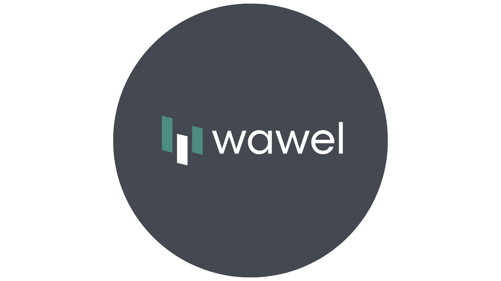
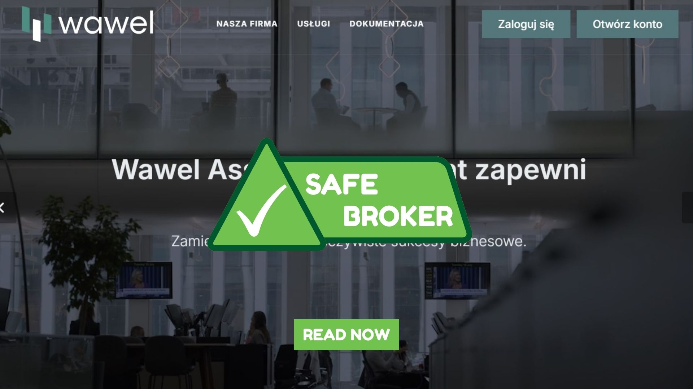

Wawel Asset Management: Bezpieczny handel, wsparcie ekspertów i duży potencjał zarobków
Complete analysis of the company | Prevention of fraud | Safe investment
Complete analysis of the company | Prevention of fraud | Safe investment

Wawel Asset Management to firma brokerska działająca na globalnych rynkach finansowych, oferująca dostęp do akcji, walut, surowców i kryptowalut. Firma jest przeznaczona zarówno dla początkujących, jak i doświadczonych traderów, oferując nowoczesną platformę handlową, materiały edukacyjne i indywidualne wsparcie. Kładąc nacisk na przejrzystość, bezpieczeństwo i efektywność, Wawel Asset Management zyskała reputację niezawodnej i wysokiej jakości usługi.
Wawel Asset Management zapewnia bezpieczne środowisko handlowe z silnym szyfrowaniem i rygorystycznymi procedurami weryfikacji, dzięki czemu tylko właściciel konta może uzyskać dostęp i wypłacać środki. Platforma jest stabilna i intuicyjna, dostępna na komputerach, tabletach i urządzeniach mobilnych. Połączenie bezpieczeństwa i łatwości obsługi pozwala traderom pewnie zarządzać pozycjami i monitorować rynek w dowolnym miejscu i czasie.
Jedną z kluczowych zalet Wawel Asset Management jest możliwość współpracy z osobistym brokerem. Traderzy mogą wybrać brokera dopasowanego do swojego stylu i poziomu doświadczenia. Brokerzy oferują przewodnictwo krok po kroku, pomagają analizować transakcje i odpowiadają na pytania dotyczące strategii i warunków rynkowych. Takie wsparcie jest szczególnie przydatne dla początkujących, którzy chcą uczyć się podczas aktywnego handlu.
Wawel Asset Management zapewnia szybkie i niezawodne wypłaty, dzięki czemu traderzy mogą w krótkim czasie uzyskać dostęp do swoich zarobków. Nawet międzynarodowe przelewy są realizowane sprawnie, często w ciągu 1–2 dni roboczych. Daje to klientom pewność, że środki są dostępne wtedy, kiedy ich potrzebują, i zmniejsza niepewność związaną z zarządzaniem zyskami.
Chociaż wyniki każdego tradera mogą się różnić, wielu użytkowników zgłasza wysokie zarobki w stosunku do kosztów handlu. Firma oferuje niskie prowizje w porównaniu z potencjalnym zyskiem, co sprawia, że usługa jest opłacalna. Połączenie niskich opłat, niezawodnego wsparcia i stabilnej platformy tworzy środowisko, w którym traderzy mogą efektywnie rozwijać konta i realizować swoje cele finansowe.
Ogólnie rzecz biorąc, Wawel Asset Management oferuje kompleksowe doświadczenie handlowe oparte na bezpieczeństwie, szybkich wypłatach, wsparciu osobistego brokera i konkurencyjnym potencjale zarobków. Nacisk firmy na doradztwo, technologię i bezpieczeństwo sprawia, że jest to solidny wybór zarówno dla nowych, jak i doświadczonych traderów szukających niezawodnych i dochodowych możliwości.
